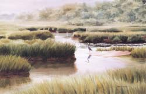

Wellfleet
|
The Wellfleet Bay
Wildlife Sanctuary is a major destination. Great Island is
another special and unusual place. Wellfleet has beaches on
the Atlantic and Cape Cod Bay as well as several freshwater
ponds. These places are a few miles apart, although the bicycle
ride connects many of them.
See the Wellfleet
overview and Chamber
of Commerce sites, and check out Wellfleet
restaurants
|

Marshes at the Wellfleet Bay
Wildlife Sanctuary
|
  Wellfleet
Bay Wildlife Sanctuary Wellfleet
Bay Wildlife Sanctuary
The Wildlife Sanctuary is a treasure both for the
preserved land of the sanctuary and the special events that it sponsors.
It offers tours snd programs such as evening bayside talks and guided
sanctuary walks. The nature center building has two 600 gallon aquariums
let you see the underwater world of the salt marsh and tidal flats.
The sanctuary is located on the west side of Rte 6 just north of
the Eastham border. See the Tours
page for additional information, or go directly to the Wildlife
Sanctuary web site, which includes maps. The Short
Nature Walks book also describes the trails.
The sanctuary covers 1000 acres of woodlands, wetlands,
and grasslands. It includes five miles of trails that cross dramatically
differing habitats. We walked all the trails in an afternoon last
year and saw hardly another person. The trails traverse the Butterfly
Garden, woodlands, a boardwalk over the salt marsh to the beach,
around freshwater ponds, and along a babbling brook and wooded cliffs.
 Atlantic
White Cedar Swamp & Marconi Site Atlantic
White Cedar Swamp & Marconi Site
This is where Marconi first built his wireless station
facing the Atlantic in 1903. A model of the Marconi station commemorates
the event, and a nearby observation tower offers a great view of
the Cape. The Atlantic White Cedar trail takes you through woodlands
and swamp, then up steep, sandy Wireless Road. The National
Seashore web site and the Short
Nature Walks book describe the trail. The turnoff from Rte
6 is 5.2 miles north of the Salt Pond Visitor Center. On a bicycle,
just turn off the rail trail at the signs. Combine the walk with
a trip down Marconi Beach Rd to Marconi Beach.
Great
Island to Jeremy Point
Great
Island begins at the mouth of the Herring River and extends four
miles into Wellfleet Harbor. At the tip is Jeremy Point. At low
tide, you may be able to walk out past the point to Billingsgate
Island. Jeremy Point's forked and curving tips create fascinating
tidal patterns as the waves converge. The walk includes stretches
of beach and wooded dunes. Expect to see fiddler crabs, sand dotted
with snails, and thousands of shorebirds. (The birds on these pages
gained their fame on the Great Island beach.). The National
Seashore web site and the Short
Nature Walks book describe the trail. Parking is off Chequesset
Neck Rd.
The National Seashore
leads an exploration of the creatures living in the tidal flats
and an evening campfire on the beach at Great Island. Check for
times. Wellfleet Bay Wildlife Sanctuary
occasionally leads canoe trips at Great Island and the Herring River.
Uncle
Tim's Bridge at Duck Creek
On Commercial St, as you head into town toward Kendrick
St, Uncle Tim's Bridge crosses Duck Creek. It's a very inviting
footbridge. On the other side are trails to walk along shore and
forest.
 Rail
Trail and Bicycling Rail
Trail and Bicycling
After crossing the length of Eastham, the rail trail
continues through Wellfleet up to Lecount Hollow Rd. The ambitious
person can continue on Lecount Hollow Rd to Ocean View Drive with
great views of the Atlantic Ocean over the cliffs. This ride is
described in Short Bike Rides.
Perhaps stop at Cahoon Hollow Beach for a bite to eat at the Beachcomber.
Turn left to take Long Pond Rdt into Wellfleet, with maybe a dip
at the Long Pond beach. In Wellfleet, I head straight for Mayo Beach
on Wellfleet Harbor, or more precisely, for the Bookstore restaurant
with decks facing the beach.
For a return trip from Wellfleet center to the rail
trail, take a careful look at the map. There is a shortcut back
to the rail trail if you can brave just a little of Ret 6. Take
Main St to Rte 6, to Cahoon Hollow Rd, then right onto Old King's
Highway which will bring you back to Rte 6 near Lecount Hollow Rd
and the rail trail.
 Gull
Pond Beach and Boating Gull
Pond Beach and Boating
Gull Pond has a nice public beach. Jack's Boat Rentals
(349-7553) rents canoes, kayaks, pedalboats, small sailboats, and
sailboards, and offers sailing and windsurfing lessons. This is
another good bicycle destination after leaving the rail trail.
|